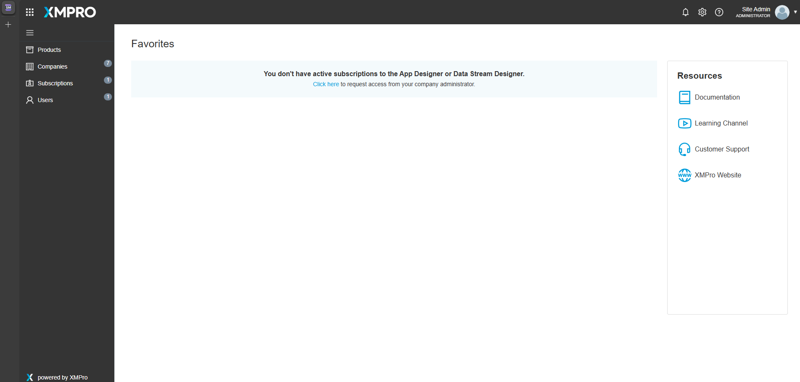
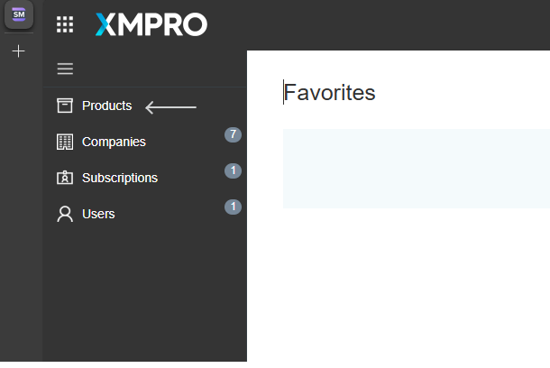
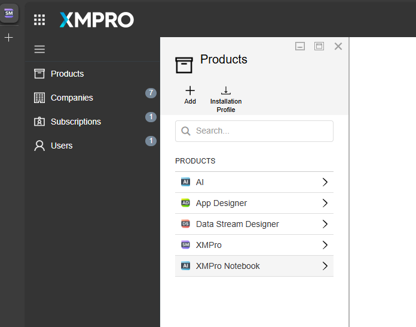
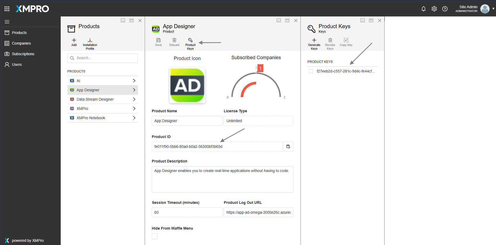
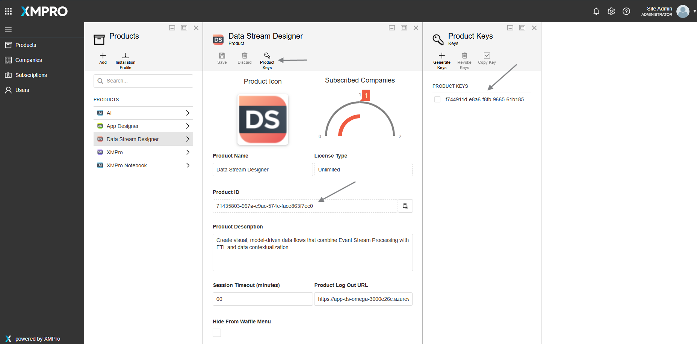
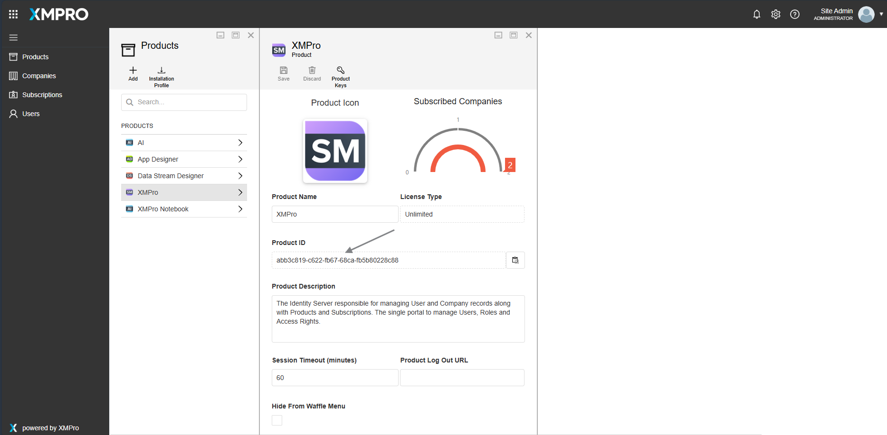
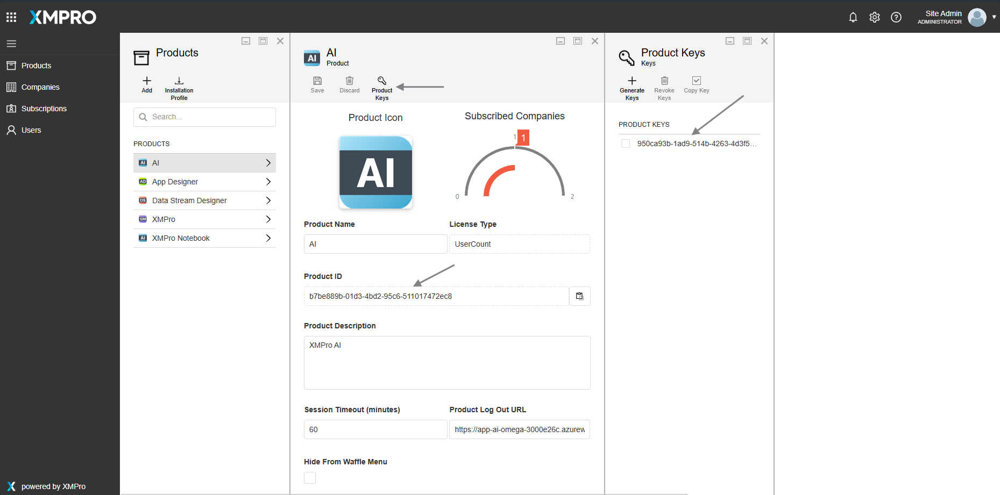
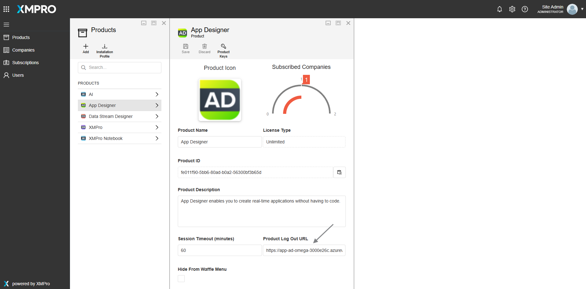
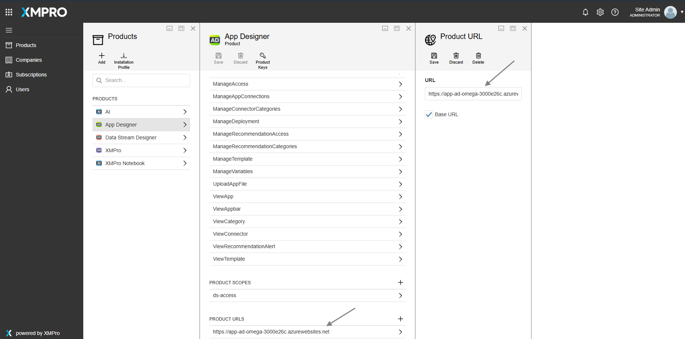

Using Existing Database with XMPro Terraform Deployment
Table of Contents
- Overview
- Decision Flow
- Before You Begin
- Quick Start
- Configuration Guide
- Deployment Process
- Post-Deployment Setup
- Behavior Changes
- Troubleshooting
- Support
Overview
What This Feature Does
The XMPro Azure Terraform module enables you to deploy applications that connect to existing SQL Server databases instead of creating new ones. This capability is controlled by the use_existing_database Terraform variable.
Why Use This Feature
- Version Upgrades: Migrate between XMPro versions while preserving your data
- Development Environments: Maintain persistent data across deployments
- Disaster Recovery: Restore applications with existing data quickly
- Staged Deployments: Separate database and application lifecycles
How It Works
- You provide connection details to your existing SQL Server
- Terraform skips database creation but still creates all application infrastructure
- Applications connect to your existing databases with preserved data
- Database schemas are updated automatically for the new version
Decision Flow
Is this feature right for you?
✅ Use This Feature If:
- You're upgrading from an older XMPro version
- You want to preserve existing data during redeployment
- You're restoring after infrastructure failure
- You need to maintain data continuity
❌ Don't Use This Feature If:
- This is a fresh production installation
- You're setting up a multi-tenant environment
- You want completely isolated databases
Before You Begin
🚨 CRITICAL: Complete all prerequisites before starting deployment
✓ Required Resources Checklist
Existing SQL Server with these databases:
AD- Application Designer databaseDS- Data Stream Designer databaseSM- Subscription Manager databaseAI- AI Services database (optional)
Network Access between Azure and your SQL Server
Admin Credentials for your SQL Server
✓ Required Information Checklist
- SQL Server FQDN (e.g.,
server.database.windows.net) - Product IDs and Keys from your existing installation
- Database admin username and password
- Azure subscription access for Terraform deployment
✓ Access & Permissions Checklist
- Terraform permissions on target Azure subscription
- Key Vault access for secret management
- Site admin access to existing SM application
How to Retrieve Product IDs and Keys
⏱️ Time Required: 10 minutes
These values are essential for connecting your new deployment to existing licenses and configurations.
Step 1: Access Your Current Subscription Manager
Navigate to your existing SM URL
- Open your web browser
- Go to your current SM installation
- Log in with site admin credentials
 Figure 1: XMPro Subscription Manager Home page interface
Step 2: Navigate to Product Management
Find the Products section
- Look for Products in the navigation menu
- Click Products to view registered applications

Figure 2: Navigating to Products section in SM
Step 3: Collect Required Information
For each product, you need both Product ID and Product Key:
 Figure 3: Products list showing all registered applications
Application Designer (AD):
- Click Application Designer product
- Copy Product ID → use for
existing_ad_product_id - Copy Product Key → use for
existing_ad_product_key
 Figure 4: Application Designer product details showing Product ID and Product Key
Data Stream Designer (DS):
- Click Data Stream Designer product
- Copy Product ID → use for
existing_ds_product_id - Copy Product Key → use for
existing_ds_product_key
 Figure 5: Data Stream Designer product details showing Product ID and Product Key
Subscription Manager (SM):
- Click Subscription Manager product
- Copy Product ID → use for
existing_sm_product_id
 Figure 6: Subscription Manager product details showing Product ID
AI Designer (AI) (Optional):
- Click AI Designer (if present)
- Copy Product ID → use for
existing_ai_product_id - Copy Product Key → use for
existing_ai_product_key
 Figure 7: AI Designer product details showing Product ID and Product Key (optional)
💡 TIP: Screenshot placeholder: AD Product details page showing Product ID and Product Key fields
Step 4: Save Information Securely
- Keep these values readily available for configuration
- Store them securely - they're linked to your licensing system
ℹ️ NOTE: Product IDs and Keys are unique identifiers that ensure seamless migration without licensing issues.
Quick Start
⏱️ Total Time: 30 minutes (15 min deployment + 15 min configuration)
What You'll Accomplish: Deploy new XMPro applications connected to your existing databases
Step 1: Prepare Configuration (5 minutes)
Create your terraform.tfvars file with existing database settings:
# Core Settings
use_existing_database = true
existing_sql_server_fqdn = "xmpro-prod-sql.database.windows.net"
# Authentication (optional if using same credentials)
# db_admin_username = "sqladmin"
# db_admin_password = "SecureP@ssw0rd123!"
# Product IDs from your existing installation
existing_sm_product_id = "f47ac10b-58cc-4372-a567-0e02b2c3d479" # Replace with your SM Product ID
existing_ad_product_id = "6ba7b810-9dad-11d1-80b4-00c04fd430c8" # Replace with your AD Product ID
existing_ds_product_id = "6ba7b811-9dad-11d1-80b4-00c04fd430c8" # Replace with your DS Product ID
existing_ai_product_id = "6ba7b812-9dad-11d1-80b4-00c04fd430c8" # Optional
# Product Keys from your existing installation
existing_ad_product_key = "550e8400-e29b-41d4-a716-446655440000" # Replace with your AD Product Key
existing_ds_product_key = "550e8400-e29b-41d4-a716-446655440001" # Replace with your DS Product Key
existing_ai_product_key = "550e8400-e29b-41d4-a716-446655440002" # Optional
⚠️ IMPORTANT: Replace example values with your actual Product IDs and Keys from Step 3 above.
Step 2: Deploy Infrastructure (10 minutes)
terraform init
terraform apply
What to expect:
- Deployment takes 10-15 minutes
- No new databases will be created
- Applications may show errors initially (normal)
- Save the output URLs for next step
Step 3: Update Product URLs (10 minutes)
- Log into your old SM application
- Navigate to Products section
- Update each product's URL with new Terraform outputs
- Restart SM App Service in Azure Portal
- Test application access
Step 4: Verify Success (5 minutes)
✅ All applications load without errors
✅ Login/logout works correctly
✅ Data from existing databases is accessible
✅ Navigation between applications works
Need detailed steps? → Continue to Configuration Guide
Configuration Guide
Core Configuration Variables
Essential Settings
| Variable | Example | Description |
|---|---|---|
use_existing_database |
true |
Enables existing database mode |
existing_sql_server_fqdn |
"server.database.windows.net" |
Your SQL Server's full domain name |
Authentication Settings (Optional)
| Variable | Example | Description |
|---|---|---|
db_admin_username |
"sqladmin" |
Database admin username |
db_admin_password |
"SecureP@ssw0rd123!" |
Database admin password |
ℹ️ NOTE: If not specified, uses existing credentials from your setup.
Product ID Configuration
| Variable | Required | Description |
|---|---|---|
existing_sm_product_id |
✅ Yes | SM Product ID from existing installation |
existing_ad_product_id |
✅ Yes | AD Product ID from existing installation |
existing_ds_product_id |
✅ Yes | DS Product ID from existing installation |
existing_ai_product_id |
⚪ Optional | AI Product ID (if using AI services) |
Product Key Configuration
| Variable | Required | Description |
|---|---|---|
existing_ad_product_key |
✅ Yes | AD Product Key from existing installation |
existing_ds_product_key |
✅ Yes | DS Product Key from existing installation |
existing_ai_product_key |
⚪ Optional | AI Product Key (if using AI services) |
Network Settings
| Variable | Default | Description |
|---|---|---|
db_allow_all_ips |
false |
Allow all IP addresses to connect |
Complete Configuration Example
# Basic deployment settings
company_name = "acme"
environment = "prod"
location = "East US"
# Existing database configuration
use_existing_database = true
existing_sql_server_fqdn = "acme-prod-sql.database.windows.net"
# Product IDs from existing installation
existing_sm_product_id = "f47ac10b-58cc-4372-a567-0e02b2c3d479" # From SM → Products → Subscription Manager
existing_ad_product_id = "6ba7b810-9dad-11d1-80b4-00c04fd430c8" # From SM → Products → Application Designer
existing_ds_product_id = "6ba7b811-9dad-11d1-80b4-00c04fd430c8" # From SM → Products → Data Stream Designer
existing_ai_product_id = "6ba7b812-9dad-11d1-80b4-00c04fd430c8" # From SM → Products → AI Designer
# Product Keys from existing installation
existing_ad_product_key = "550e8400-e29b-41d4-a716-446655440000" # From SM → Products → Application Designer
existing_ds_product_key = "550e8400-e29b-41d4-a716-446655440001" # From SM → Products → Data Stream Designer
existing_ai_product_key = "550e8400-e29b-41d4-a716-446655440002" # From SM → Products → AI Designer
ℹ️ NOTE: Replace example values with your actual configuration details.
Deployment Process
Phase 1: Pre-Deployment Validation (10 minutes)
Verify Azure Resources
Navigate to Azure Portal
- Open https://portal.azure.com
- Sign in with subscription access
Locate Your SQL Server
- Search for "SQL servers"
- Find your existing SQL Server
- Copy the Server name (FQDN)
Verify Required Databases
- Check databases section on SQL Server overview
- Confirm these databases exist:
AD(App Designer)DS(Data Stream Designer)SM(Subscription Manager)AI(Optional - AI Services)
🚨 CRITICAL: Database names must match exactly. Different naming conventions will not work.
Test Database Connectivity
- Verify databases are "Online"
- Confirm admin credentials are correct
- Reset password if needed via Azure Portal
Phase 2: Infrastructure Deployment (15 minutes)
Deploy Using Example Module
Get the Code
git clone https://github.com/XMPro/terraform-xmpro-azure.git cd terraform-xmpro-azure/examples/existing-databaseConfigure Variables
- Create
terraform.tfvarsbased on examples above - Replace all placeholder values with your actual data
- Create
Deploy Infrastructure
terraform init terraform applyDuring deployment, verify the plan shows:
- ✅ No SQL Server creation
- ✅ No database creation
- ✅ App Services will be created
- ✅ Key Vault and supporting resources
Monitor Progress
- Deployment takes 10-15 minutes
- Applications may show errors initially (expected)
- Save output values for post-deployment setup
Phase 3: Deployment Verification (5 minutes)
Check Terraform Outputs
Run terraform output and save these values:
ad_url- Application Designer URLds_url- Data Stream Designer URLsm_url- Subscription Manager URLresource_group_name- New resource group name
Verify Azure Resources
Navigate to the new resource group and confirm:
- ✅ App Services for AD, DS, SM (and AI if configured)
- ✅ App Service Plans
- ✅ Key Vault
- ✅ Storage Account
- ✅ Application Insights
- ✅ No SQL Server or databases (confirms existing database mode)
ℹ️ NOTE: Applications will show errors until post-deployment setup is complete.
Post-Deployment Setup
🚨 CRITICAL: These steps are required for applications to function properly.
⏱️ Time Required: 15 minutes
When Manual Setup Is Required
⚠️ IMPORTANT: Manual setup is only needed if your new deployment will use different URLs than your existing installation. If using the same URLs, skip this section.
Step 1: Update Product URLs (10 minutes)
Access Subscription Manager
- Navigate to your OLD SM URL (existing installation)
- Log in with site admin credentials
- Go to Products section
Update Each Product
For each product (Application Designer, Data Stream Designer, AI Services):
- Click the product name to edit settings
- Update Product URL field:
- App Designer: Use your new
ad_urloutput - Data Stream Designer: Use your new
ds_urloutput - AI Services: Use your new
ai_urloutput (if applicable)
- App Designer: Use your new
- Update Logout URL field:
- Format:
https://your-new-sm-url.azurewebsites.net/Account/Logout - Replace with your actual new SM URL
- Format:
- Save changes
  Figure 8: Updating Product URL and Logout URL fields for existing products
Step 2: Restart Application Services (3 minutes)
- Navigate to Azure Portal → App Services
- Find your new SM App Service
- Name format:
app-sm-<company>-<environment>-<suffix>
- Name format:
- Click Restart from the toolbar
- Wait 2-3 minutes for full restart
Step 3: Verify Functionality (2 minutes)
Test Application Access
✅ Subscription Manager: Navigate to new SM URL, verify login
✅ Application Designer: Click AD icon from SM or navigate directly
✅ Data Stream Designer: Click DS icon from SM or navigate directly
✅ Navigation: Test links between applications work
Test Key Features
✅ Authentication: Login and logout functions properly
✅ Data Access: Existing database data is accessible
✅ User Permissions: Existing roles and permissions intact
Behavior Changes
What Gets Skipped ⏭️
- SQL Server Creation: Uses your existing SQL Server
- Database Creation: Uses your existing databases
- Licenses Container: Automatic license setup is skipped
What Still Happens ✅
- Database Schema Updates: Migration containers run to update schemas for the new version
- App Services: All application containers are created
- Infrastructure: Key Vault, Storage, monitoring resources are created
- Container Services: Stream Host and supporting containers are deployed
🚨 CRITICAL: Database migration containers (
sm-dbmigrate,ad-dbmigrate,ds-dbmigrate,ai-dbmigrate) will run to ensure your existing databases are updated with any schema changes from the new version. This is essential for version upgrades.
⚠️ IMPORTANT: When the licenses container is skipped, you must manage licensing manually. Ensure your existing database contains valid license information, or configure licensing through the SM application after deployment.
Troubleshooting
Common Issues Decision Tree
Problem: SM shows default XMPro page instead of login
Possible Cause: ServerUUID mismatch
- ✅ Check: ServerUUID in Key Vault matches ProductId in database
- ✅ Fix: Run query
SELECT ProductId FROM [dbo].[Products] WHERE [Name]='XMPRO' - ✅ Update: Key Vault ServerUUID with correct ProductId
Problem: Applications show "Database Connection Error"
Possible Causes: Connection or credential issues
- ✅ Check: Connection strings use correct FQDN
- ✅ Check: Databases are online and accessible
- ✅ Check: Admin credentials have sufficient permissions
Problem: Applications won't start or show 500 errors
Possible Causes: Configuration or network issues
- ✅ Check: All required databases exist with correct names
- ✅ Check: Firewall rules allow Azure service connections
- ✅ Check: Product IDs and Keys are correct
Detailed Solutions
ServerUUID Configuration Issues
Symptoms: Default XMPro page instead of login interface
Solution Steps:
- Connect to your SM database
- Run:
SELECT ProductId FROM [dbo].[Products] WHERE [Name]='XMPRO' - Copy the ProductId result
- Navigate to Key Vault in Azure Portal
- Update ServerUUID secret with the ProductId value
- Restart SM App Service
Database Connection Problems
Symptoms: 500 errors or connection failures
Solution Steps:
- Verify FQDN in connection strings matches your SQL Server
- Check database status in Azure Portal (should be "Online")
- Test connectivity from Azure to your SQL Server
- Verify admin credentials are correct
- Check firewall rules allow Azure services
Support
Getting Help
Check Application Logs:
- Navigate to App Service → Monitoring → Log stream
- Review detailed error messages
Review Configuration:
- Verify all manual setup steps completed
- Double-check Product IDs and Keys match exactly
Contact Support:
- Gather deployment details and error logs
- Include Terraform output and Azure resource information
- Contact XMPro support with comprehensive details
Additional Resources
💡 Remember: Using existing databases provides flexibility for migration scenarios but requires careful attention to the manual setup steps for successful deployment.
Last modified: August 07, 2025